Create and Deploy
Firebase Cloud Functions have very little to do with GML itself and more with programming server-side functions in JavaScript (or TypeScript). This guide will get you going with creating your first function and deploying it to the Firebase Cloud Functions server.
-
We'll move to the folder where we want work using the
cd $Pathcommand (this will change the path you're working in):
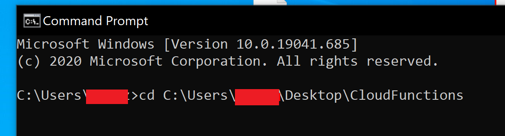 -
We now need to call the **
firebase initcommand:
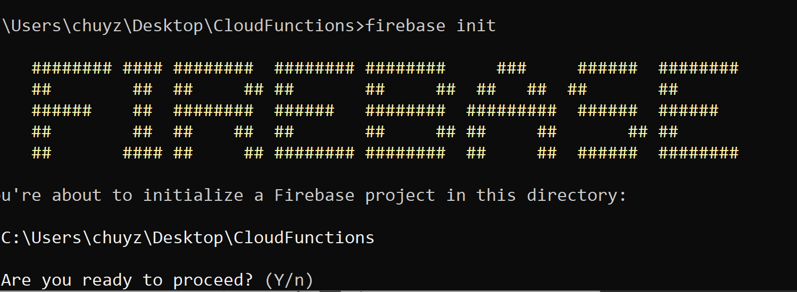 -
You will be asked " Are you ready to proceed? ", where your response should be Y (yes).
-
Now use the arrow keys to navigate the list and select Functions with the Space key; after that, press the Enter key to continue.

-
At this point we recommend using an existing Firebase project (as this will make configuration easier).
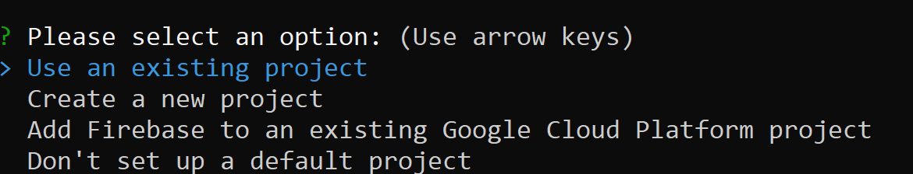 -
Now enter your Project ID , which you can get under Project Settings in the Firebase Console for your project.
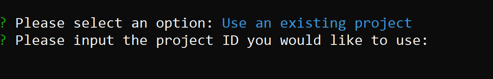 -
Choose JavaScript (for the purpose of this tutorial).
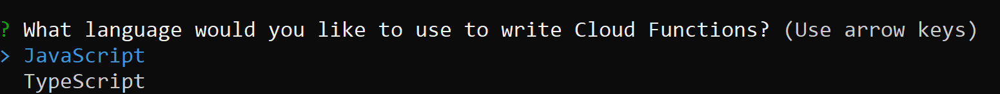 -
Choose N (unless you are experienced with JS and wish to use ESLint).
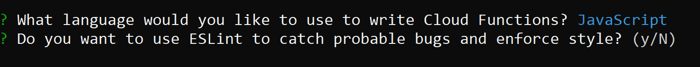 -
Finally select Y (for installing dependencies).

-
After the process is over, you can see that your folder now has the following structure:
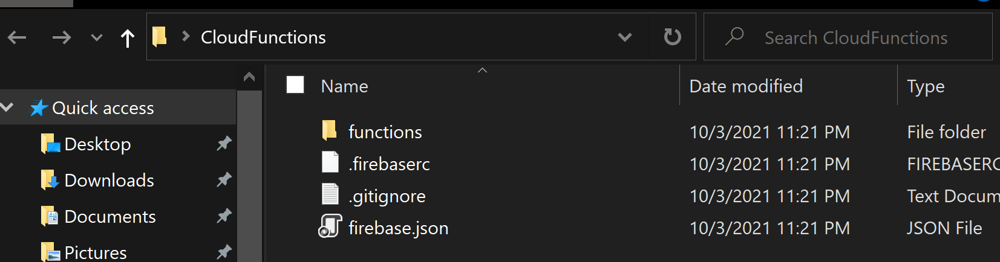 -
Inside the functions folder we can see a
index.jsfile, which is where we will be declaring our functions.

-
In the
index.jsfile you will see the following code, which creates a function called helloWorld and initialises its code.
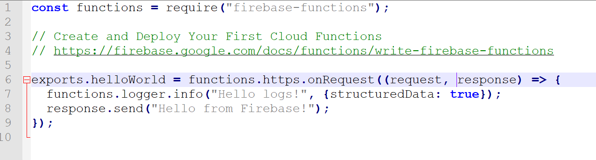
NOTE
We can see that we are exporting a
helloWorldfunction that registers to anonRequestevent with the argumentsrequestandresponse; these correspond to the "message sent by the client" (GameMaker) and the "message we will send back", respectively.
- Deploy it with
firebase deploycommand. -
When the deploy process is done, you will see the " Deploy complete" message.
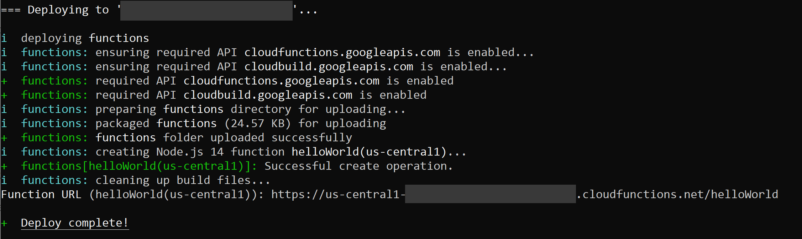 -
After deploying has finished, you will see the function on the Firebase Console in the Functions tab:
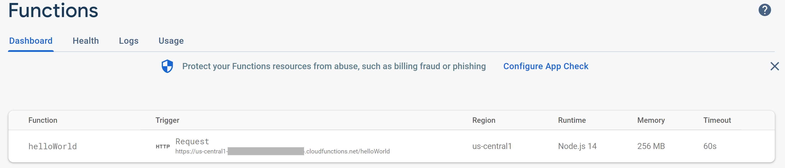 -
This way you are able to publish your own functions to the Firebase Cloud Functions.
Firebase Console
This guide covers setting up and enabling Cloud Functions from inside the Firebase Console.
-
Head over to the Functions section, ** however to use this you will need to have upgraded your project to Blaze (pay as you go).

-
After upgrading the project you will see an Instructions button that you need to click on:
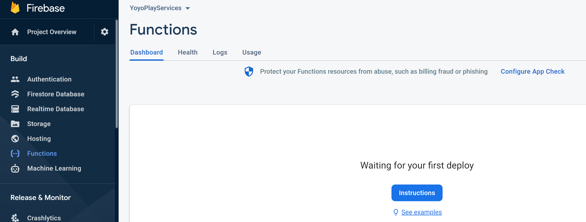 -
The first instruction is to use
npm install -g firebase-toolsin the command line (you will need to install NodeJS for this).

-
After some loading you need to click on Continue, after which you will see the following page:

-
We are done configuring the Firebase Console. We can now continue to creating and deploying a Cloud Functions project.